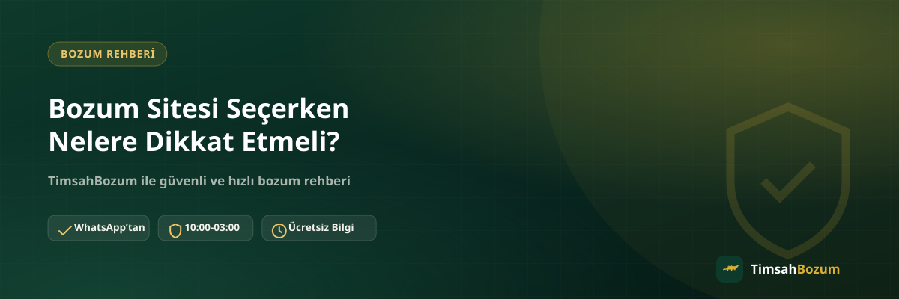

İnternette arama yaptığında Razer Gold, Paycell, Pokus veya mobil ödeme bakiyeni nakde çevirebileceğini söyleyen onlarca sayfayla karşılaşırsın. Ama bu sayfaların hepsi aynı güvenilirlikte değil. Yanlış bir siteye kod veya bakiye bilgini paylaşmak hem zaman kaybettirir hem de gereksiz risk oluşturur. Bu yazıda, bir bozum sitesine bilgi paylaşmadan önce kontrol etmen gereken temel noktaları sırasıyla ele alıyoruz.
Güvenilir Bir Bozum Sitesi Neye Bakılarak Seçilir?
Bir bozum sitesini değerlendirirken tek bir kritere bakmak yeterli olmaz. İletişim kanalının netliği, sürecin şeffaflığı ve senden istenen bilgilerin kapsamı bir arada değerlendirildiğinde daha sağlıklı bir karar verebilirsin. Aşağıdaki başlıklar, işleme başlamadan önce gözden geçirmen gereken noktaları özetliyor.
Resmi İletişim Kanalı Açıkça Belirtilmiş mi?
Güvenilir bir bozum sitesi, işlemlerin hangi kanal üzerinden yürüdüğünü net biçimde belirtir. Örneğin TimsahBozum'da tüm işlemler yalnızca resmi WhatsApp hattımız üzerinden (+90 543 887 21 71) yürür. Sitede yayınlanan numarayı doğrulamadan, farklı bir numaradan veya sosyal medya mesajından gelen bir teklife bilgi paylaşmamak en temel güvenlik adımıdır. Numara sitede açıkça yayınlanmıyorsa ya da sürekli değişiyorsa, bu bir uyarı işareti olabilir.
Süreç Adım Adım Açıklanmış mı?
Ciddi bir bozum sitesi, işlemin nasıl ilerlediğini adım adım anlatır: bilgini paylaşman, oranın teyit edilmesi, onay sonrası ödemenin alınması gibi. Süreci belirsiz bırakan, "yaz hemen hallederiz" dışında bir açıklama sunmayan siteler, işlem sırasında ne bekleyeceğini bilememene yol açar. Mobil bozum gibi genel bir hizmet sayfasında hangi hizmetlerin desteklendiğini ve sürecin nasıl işlediğini görebilmen, sitenin şeffaflığı hakkında fikir verir.
Kişisel Bilgi veya Hesap Erişimi İsteniyor mu?
Bir bozum işlemi için üyelik, form doldurma, kimlik belgesi veya hesap şifresi gerekmez. Tek ihtiyaç duyulan, kod bilgisi ya da bakiyeni gösteren güncel bir ekran görüntüsüdür. Bir sitenin senden hesabına erişim vermeni, uygulama indirmeni ya da SMS doğrulama kodunu paylaşmanı istemesi, ciddi bir uyarı işaretidir. Bu tarz talepler gelirse işlemi durdurup resmi hattan durumu sorman gerekir.
Oranlar Şeffaf mı, Nasıl Teyit Ediliyor?
Oranlar zaman içinde güncellenebildiği için sitede yayınlanan oran genel bir referans niteliği taşır. Güvenilir bir site, işlem öncesi güncel oranı senden gizlemez, aksine WhatsApp üzerinden açıkça teyit eder. Örneğin kod tabanlı hizmetlerde Razer Gold bozdurma, bakiye tabanlı hizmetlerde ise Paycell bozdurma gibi sayfalarda güncel oranların yayınlanmış olması ve işlem sırasında bu oranın tekrar teyit edilmesi, sürecin şeffaf yürüdüğünün bir göstergesidir.
Hangi Hizmetler Destekleniyor, Kod mu Bakiye mi?
Bozum siteleri genelde birden fazla hizmeti bir arada sunar: Razer Gold ve iTunes gibi kod tabanlı hizmetler ile Pokus, Paycell ve mobil ödeme gibi bakiye tabanlı hizmetler. Bu ikisi farklı mantıkla çalışır. Kod tabanlı hizmetlerde tek kullanımlık kodun tam değeri bozdurulur, kısmi bozum söz konusu değildir. Bakiye tabanlı hizmetlerde ise bakiyenin tamamı ya da bir kısmı bozdurulabilir. Seçtiğin sitenin hangi hizmeti desteklediğini ve bu ayrımı doğru şekilde anlattığını kontrol etmen, yanlış bir beklentiyle işleme başlamanı önler.
Kullanıcı Yorumları Tek Başına Yeterli mi?
Yorumlar bir fikir verir ama tek başına karar vermek için yeterli değildir. Bazı yorumlar abartılı ya da yönlendirilmiş olabilir. Yorumların yanı sıra sitenin iletişim sayfasının netliğine, sürecin ne kadar açık anlatıldığına ve senden hangi bilgilerin istendiğine bakman, daha dengeli bir değerlendirme yapmanı sağlar. Tek bir olumsuz ya da olumlu yorumla karar vermek yerine genel tutarlılığa odaklanmak daha sağlıklı bir yaklaşımdır.
Çalışma Saatleri Netleştirilmiş mi?
Bir bozum sitesinin çalışma saatlerini açıkça belirtmesi, mesajının ne zaman yanıtlanacağı konusunda net bir beklenti oluşturmanı sağlar. TimsahBozum her gün 10:00-03:00 arası aktif. Bu saatler dışında gönderdiğin bir mesaj kaybolmaz, hat açıldığında sırasıyla yanıtlanır. Çalışma saatlerini hiç belirtmeyen ya da sürekli değişen bir site, iletişimde belirsizlik yaratabilir.
İlk Kez Deniyorsan Nasıl İlerlemelisin?
Bir bozum sitesini ilk kez deneyecekseniz, tüm kodunu veya bakiyenin tamamını paylaşmadan önce siteyle kısa bir yazışma yaparak süreci anlamanda fayda var. Resmi hattan yazıp oranı sor, sürecin nasıl ilerleyeceğini öğren ve sana ne istendiğini gözlemle. Bakiye tabanlı bir hizmet kullanıyorsan bakiyenin bir kısmını bozdurarak süreci ilk elden deneyimlemek, sonraki işlemlerde daha rahat hareket etmeni sağlar. Kod tabanlı hizmetlerde bu şekilde kademeli ilerleme mümkün olmadığından, işlem öncesi tüm sorularını netleştirmen daha önemli hale gelir.
Onay sonrası ödemenin nasıl ve hangi yöntemle yapılacağını da işlem başlamadan önce sorman, sürecin sonunda sürpriz yaşamanı önler. Bu bilgi WhatsApp üzerinden görüşülerek netleştirilir ve ödeme yöntemi taraflar arasında bu şekilde belirlenir.
İlgili Yazılar
- En Güvenilir Mobil Ödeme Bozdurma Sitesi Nasıl Seçilir?
- Resmi Bozum Hattını Sahte Hesaplardan Nasıl Ayırt Edersin?
- Mobil Bozum Yorumları: Kullanıcı Yorumlarını Okurken Nelere Dikkat Etmeli?
Özetle, bir bozum sitesi seçerken resmi iletişim kanalının netliğine, sürecin şeffaflığına, senden istenen bilgilerin kapsamına ve oranların nasıl teyit edildiğine dikkat etmelisin. Bu noktaları kontrol ettikten sonra emin olduğun bir siteyle ilerlemek, hem zamanını hem de bilgini korumanın en pratik yolu. Sorularını netleştirmek istersen resmi WhatsApp hattımızdan bize yazabilirsin.